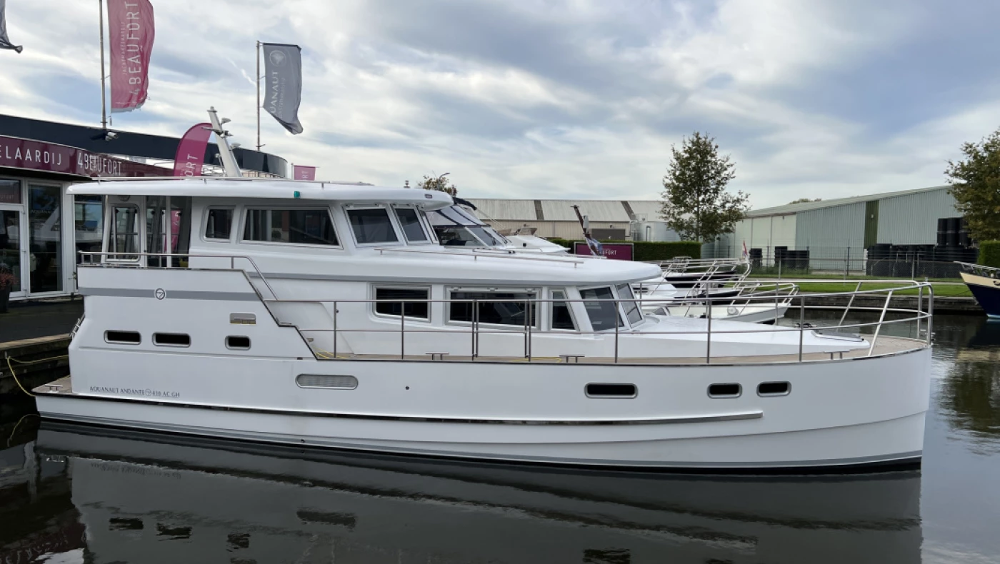

TAG 1
—
—
ORIGINAL-GPX AKTIV
ROUTE FÜR DIESEN FAHRTAGOriginalroute ausgewähltDie freigegebene Originalroute bleibt unverändert erhalten.
GPX-Fahrroute
➤ Fahrtrichtung
🚩 Start
🏁 Ziel
🏘️ Ort
⛵ See / Meer
🌬️ Windmühle
GPXRealer Streckenverlauf · Kartenbasis OpenStreetMap
⚠️ Tag 2 · Wetterentscheidung IJsselmeer
Plan A nur bei passenden Bedingungen. Ist das IJsselmeer nicht sinnvoll fahrbar, bleibt ihr binnen und nutzt die vorbereitete Ausweichlogik.
⏱️ Tag 3 · E‑Scooter-Zeitentscheidung
Rechtzeitig zurück in Workum: Fahrt über IJlst und Sneek bis SN15. Bei später Rückkehr wird auf eine kürzere vorbereitete Variante gewechselt.
TAGESBRIEF
SKIPPERBRIEF · WAS KOMMT HEUTE AUF UNS ZU?—
RESERVE / TAKTIK—
🌦️
WETTER AM AKTUELLEN FAHRTAGNoch nicht geladenRoute
TEMP.—
WIND—
BÖEN—
REGEN—
AUTOMATISCHE ROUTENBASIS · WATERKAARTEN-ALTERNATIVE—Basisinformationen werden vorbereitet.
Noch keine von ChatGPT erstellten Routeninformationen importiert.
START——
ZIEL——
DISTANZ—aus GPX berechnet
PLAN-FAHRZEIT—Planwert mit 8 km/h
Ortsnamen: © OpenStreetMap-Mitwirkende/Nominatim · Wetter: Open-Meteo. Bei fehlendem Internet bleibt die GPX-Route vollständig nutzbar.
DAUERHAFT INTEGRIERTE TOUR-ROUTENINFOSLandgang, Passagen und Skipperbriefing für sieben StandardroutenDie geprüften Informationen sind Bestandteil der App. Ein später importiertes Tour-Paket wird als lokale Aktualisierung darübergelegt.
Die Tourinfos für alle sieben Standardrouten sind dauerhaft integriert.
NAUTIK
NAUTIK HEUTE—
OFFIZIELLER KONTEXT—
ROUTEN-DETAILS
Distanz—
Fahrzeit—
GPX-Punkte—
- 🧭 Route: —
- 🌙 Nacht: —
- 🌊 Gewässer: —
SKIPPER-HINWEISE
Optionaler Online-Layer. Öffnungszeiten anschließend in Waterkaarten prüfen.
LANDGANG & ETAPPE
TOUR 2026 · DAUERHAFT INTEGRIERT
Tagesplan
Der ausgewählte Fahrtag als ausführlicher Ablauf aus den fest eingebauten Routeninformationen.
RUNNER TRANSFER · ARTEMIS ≈ LAUFTEMPO
Runner
Parallel zur Tagesroute laufen, während Artemis zum vereinbarten Pickup weiterfährt.
Kein Runner-Transfer
AKTIVE RUNNER-STRECKE
—
— · —
🏃 RUN START—
→
🏁 PICKUP—
Artemis Runner🏃 Start🏁 Pickup
Online-Kartenbasis © OpenStreetMap · Fußroute wird über aktuelles OSM-Wegenetz berechnet und lokal zwischengespeichert.
Runner wird vorbereitet …
Hinweise
Quellen / Kontrolle
Die Runner-Funktion ergänzt das Cockpit. Sie verändert keine Skipper-, GPX-, Wetter-, Nautik- oder Speicherfunktion. Vor Ort entscheiden Skipper und Läufer über sicheren Ausstieg, Weg und Pickup.
ECHTES WETTER · V0.18.2
Wetter & Wind
Live-Daten für die ausgewählte Tagesroute. Auf Tag 2 zusätzlich IJsselmeer-Fokus.
🌦️
Route
—
Noch nicht geladen Quelle: Open-Meteo · noch nicht aktualisiert
SKIPPER-EINSCHÄTZUNG—Nur Zusatzinformation – Waterkaarten und lokale Beobachtung bleiben maßgeblich.
WIND
Wind—
Böen—
Richtung—
Beaufort ca.—
NIEDERSCHLAG & SICHT
Regen—
Wahrscheinlichkeit—
Sicht—
Bewölkung—
TAGESWERTE
Min—
Max—
Sonnenaufgang—
Sonnenuntergang—
TAG 2 · IJSSELMEERZusätzlicher Seewetter-Check
ENTSCHEIDUNGSTAGWellenhöhe—
Wellenrichtung—
Wellenperiode—
Status—
Marine-Daten sind eine zusätzliche Prognosehilfe. Sichtprüfung in Stavoren, Waterkaarten und Skipperentscheidung bleiben maßgeblich.
PROGNOSE FÜR DEN FAHRTAG
Wetter noch nicht geladen.
NAUTIK V0.9
Nautik heute
GPX-Route + aktives Schiffsprofil + nautische Zusatzdaten. Waterkaarten bleibt maßgeblich.
AKTIVES SCHIFF
Für die Passierbarkeitsbewertung werden Höhe, Tiefgang, Breite und Länge des aktuell gespeicherten Profils verwendet.
BEWERTUNGSLOGIK
Grünbekannter Wert mit sinnvoller Reserve
Signalgelbgeringe/fehlende Daten – prüfen
Rotbekannter Wert liegt unter dem Schiffsbedarf
Unbekannte oder nicht eindeutig nautische OSM-Maße werden niemals automatisch als „passt“ gewertet.
OFFIZIELLE QUELLEN 2026
- 🇳🇱 Fryslân: Brücken-/Schleusenbedienung 2026
- 🇳🇱 Overijssel: Noordwest-Overijssel Bedienzeiten
- ⚠️ Weerribben-Wieden: temporäre Sperrungen möglich
AKTUELLER TAG—
🧭
WAS KOMMT ALS NÄCHSTES?
Route noch nicht gescannt
Nautik-Scan starten. Mit GPS kann anschließend das nächste Objekt vor dem Boot hervorgehoben werden.
ENTFERNUNG
—
GRÜN0
PRÜFEN0
ROT0
OBJEKTE0
Noch kein Scan durchgeführt.
Der Scan nutzt mehrere OpenStreetMap/Overpass-Endpunkte als Zusatzquelle. Öffnungszeiten, Sperrungen, Wasserstände und endgültige Passierbarkeit bitte in Waterkaarten bzw. vor Ort prüfen.
NAVIGATION
Waterkaarten
Cockpit plant und informiert – Waterkaarten navigiert.
GPX-Workflow
Öffne am jeweiligen Fahrtag die Original-GPX über den Cockpit-Button und übergib sie auf dem iPad an Waterkaarten. Eine direkte proprietäre Schnittstelle wird hier nicht vorgetäuscht.
Waterkaarten öffnenTOUR & LAND · DAUERHAFT INTEGRIERT
Landgang
Ausführliche Stopps, Aktivitäten, Gastronomie und Versorgung für den ausgewählten Fahrtag.
LIEGEPLÄTZE · DAUERHAFT INTEGRIERT
Nachtplätze
Fotos, Charakter, Versorgung und Anlegetaktik für alle sieben geplanten Nächte.
VOR DER ABFAHRT · LOKAL GESPEICHERT
Bunkern
Pack- und Übergabeliste abhaken, Mengen notieren, Zuständigkeiten verteilen und eigene Einträge ergänzen.
FORTSCHRITT0 von 0 erledigtListe wird geladen …
0 %
EIGENE ERGÄNZUNG
Was fehlt noch?
Eigene Einträge werden nur auf diesem Gerät gespeichert und können wieder gelöscht werden.
Speicherung: Die Grundliste ist fest Bestandteil der App. Häkchen, Mengen, Zuständigkeiten und eigene Ergänzungen werden automatisch im Browser dieses Geräts gespeichert. Sie werden nicht zwischen iPad, iPhone und MacBook synchronisiert und können beim Löschen der Websitedaten verloren gehen.
BEDIENUNG · OFFLINE VERFÜGBAR
Hilfe & Anleitung
Die wichtigsten Funktionen des Friesland Skipper Cockpits – kurz erklärt für iPad, iPhone und MacBook.
SCHNELLSTART
So beginnt ein Fahrtag
Vier Schritte genügen für den täglichen Überblick. Waterkaarten bleibt die eigentliche Navigations-App.
- 1Fahrtag wählenOben in der Kopfzeile den gewünschten Tag auswählen.
- 2Cockpit prüfenRoute, Skipperbrief, Wetter, Nautik und Tageshinweise ansehen.
- 3Tagesplan öffnenAblauf, Orte, Landgänge und Nachtplatz kontrollieren.
- 4Waterkaarten nutzenGPX öffnen oder sichern und die Fahrt dort navigieren.
⌂Cockpit und FahrtagTagesauswahl, Route und Skipperbrief
- Der Fahrtag wird oben in der Kopfzeile ausgewählt und gilt anschließend für Cockpit, Wetter, Tagesplan, Landgang und Nachtplätze.
- Im Cockpit zeigt Originalroute die fest eingebaute GPX. Eine importierte Waterkaarten-Alternative kann separat aktiviert werden.
- Skipperbrief, Routendetails, Skipper-Hinweise sowie „Landgang & Etappe“ geben den kompakten Tagesüberblick.
- GPX öffnen übergibt die aktive Tagesroute an eine geeignete App. GPX sichern speichert eine Kopie als Datei.
▣Tagesplan, Landgang und NachtplätzeDie Reiseinformationen im Detail
- Der Tagesplan zeigt den Fahrtag chronologisch mit Gewässerfolge, Passagen, Stopps, Nachtziel und Reserve.
- Bei Orten und Naturzielen öffnen Ort-Info und Karte externe Seiten; dafür wird Internet benötigt.
- Landgang enthält ausführliche Karten zu Erleben, Essen & Trinken, Versorgung und Alternativen.
- Nachtplätze zeigt Foto, Charakter, Infrastruktur, Anlegetaktik, Kartenlink, Quelle und Plan B. Freie Plätze, Wassertiefe und Eignung müssen vor Ort geprüft werden.
🌦️Wetter und WindLive-Daten laden und richtig einordnen
- Wetterdaten werden für den ausgewählten Fahrtag über Open-Meteo geladen und benötigen Internet.
- Mit Wetter laden beziehungsweise Aktualisieren werden Prognose, Wind, Böen, Regen und Sicht neu abgerufen.
- Tag 2 enthält zusätzlich den IJsselmeer-Seewetter-Check mit Wellenhöhe, Richtung und Periode.
- Prognosen sind Entscheidungshilfen. Lokale Beobachtung, amtliche Hinweise und die Skipperentscheidung bleiben maßgeblich.
🌉Nautik, Karte und GPSPassagen prüfen und Position verwenden
- Die Karte zeigt die aktive GPX-Route. Der Online-Kartenhintergrund und optionale OSM-Brücken-/Schleusendaten benötigen Internet.
- Der nautische Scan vergleicht bekannte Werte mit Länge, Breite, Tiefgang und Höhe des gespeicherten Schiffsprofils.
- Grün bedeutet ausreichende bekannte Reserve, Signalgelb bedeutet prüfen, Rot bedeutet einen bekannten Konflikt.
- Meine GPS-Position verwendet die Position nur lokal im Browser. Dafür muss der Standortzugriff erlaubt sein.
- Fehlende oder unklare Daten werden nie automatisch als „passend“ bewertet.
🗺️Waterkaarten und AlternativrouteGPX-Workflow ohne Veränderung der Originalroute
- Den gewünschten Fahrtag auswählen.
- Eine in Waterkaarten erstellte GPX über GPX-Alternative importieren laden.
- Zwischen Originalroute und Alternative umschalten.
- Bei Bedarf die Alternative löschen; die fest eingebaute Originalroute bleibt immer erhalten.
Automatische Basis- und Wetterdaten können für die Alternative ergänzt werden. Zusätzliche Routeninfos werden nur übernommen, wenn Fahrtag und GPX-Fingerabdruck passen.
⇧Tour-RouteninfosImport, Vorrang und Wiederherstellung
- Die geprüften Informationen für alle sieben Standardrouten sind dauerhaft in der App eingebaut.
- Ein importiertes Tour-Update wird lokal gespeichert und liegt über der integrierten Fassung.
- Original wiederherstellen entfernt die lokale Ergänzung des Fahrtags. Die integrierte Fassung erscheint wieder.
- Alle Infos ausblenden blendet die integrierten Zusatzinfos lokal aus; Tour-Infos wiederherstellen aktiviert sie erneut.
- Analyse- und Informationspakete enthalten keine aktuelle GPS-Position.
⚙️SchiffsprofilArtemis-Daten bearbeiten und speichern
- Änderungen werden mit Schiffsprofil speichern lokal im Browser gesichert.
- Auf Artemis zurücksetzen stellt die eingebauten Ausgangswerte wieder her.
- Ein anderes Bootsprofil ändert nicht automatisch GPX, Tagespläne, Nachtplatzempfehlungen oder Routenfreigaben.
- Nach einer Änderung müssen Höhe, Tiefgang, Breite, Länge, Passagen und Liegeplätze für das neue Boot erneut fachlich geprüft werden.
◉Speicherung und Offline-NutzungWas dauerhaft bleibt und was lokal liegt
FEST IN DER APPOriginal-GPX, Tagesplan, Landgang, Nachtplatztexte und Bilder, Ortszuordnungen, Bunker-Grundliste und Hilfe
LOKAL IM BROWSERSchiffsprofil, GPX-Alternativen, ausgewählte Routen, importierte Updates sowie Bunker-Häkchen, Mengen, Zuständigkeiten und eigene Ergänzungen
INTERNET ERFORDERLICHWetter, Kartenhintergrund, externe Links und optionale Online-Nautikdaten
Lokale Browserdaten werden nicht automatisch zwischen iPad, iPhone und MacBook synchronisiert. Beim Löschen der Websitedaten können lokale Änderungen verschwinden; die fest eingebauten Inhalte bleiben Bestandteil der App.
＋Zum Home-Bildschirm hinzufügenApp-Ansicht auf iPad und iPhone
- Die veröffentlichte App in Safari öffnen.
- Auf Teilen tippen.
- Zum Home-Bildschirm auswählen.
- Namen bestätigen und Hinzufügen wählen.
Für einen frischen Versionsstand die GitHub-Pages-Seite zuerst einmal online in Safari öffnen. Anschließend kann sie erneut zum Home-Bildschirm hinzugefügt beziehungsweise aktualisiert werden.
⚠️
WICHTIGER SICHERHEITSHINWEIS
Planungshilfe – keine amtliche Navigation
Das Friesland Skipper Cockpit ersetzt weder Waterkaarten beziehungsweise eine aktuelle amtliche Wasserkarte noch Schifffahrtszeichen, Brücken- und Schleuseninformationen, Wetterwarnungen oder die Beobachtung vor Ort. Durchfahrt, Tiefgang, freie Liegeplätze, Bedienzeiten und Sperrungen müssen aktuell geprüft werden. Die Entscheidung und Verantwortung bleiben beim Skipper.
SCHIFF & APP
Schiffsprofil
Das aktive Schiffsprofil wird lokal im Browser gespeichert und kann später für andere Boote geändert werden.

AKTIVES SCHIFFSPROFIL
Artemis
Aquanaut Andante 400 AC Pilothouse
GRUNDDATEN
ANTRIEB & TANKS
NAUTISCHE PRÜFLOGIK
Das Cockpit verwendet Länge, Breite, Tiefgang und Höhe als Grundlage für spätere Brücken-, Engstellen- und Tiefenbewertungen.
Grünausreichende Reserve
Signalgelbgeringe Reserve / prüfen
Rotnicht passend / nicht befahren
AKTUELLE ARTEMIS-MAẞE
WICHTIG
Brückenhöhen, Wassertiefen und Sperrungen werden niemals allein aus statischen Daten als verbindlich behandelt. Aktuelle Werte müssen in Waterkaarten bzw. vor Ort geprüft werden.
SKIPPER ENTSCHEIDET